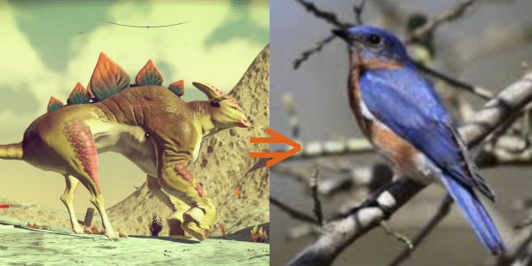

My goal is to make a relaxing game in which the player takes the role of a hobbyist bird watcher and documents the looks and songs of procedurally generated birds. I want the player to feel a sense of discovery each time they document a new bird species. I would like to take the ideas of exploration and documentation from sci-fi games like No Man's Sky and ground them closer to reality.
The player will spawn in a random place in a procedural terrain they can explore. The world will be simple with only trees and procedurally generated birds. The player will be able to click to zoom in and click again to take a picture. If the picture contains a bird the player has not seen then it will be recorded in their journal which the player can open by pressing e and flip through with the arrow keys. As the player explores the world they will hear procedurally generated bird songs which will be recorded in the journal alongside a picture of the bird.
I would like to use Unity3D as the engine for this game as I have experience with it and it provides and easier framework for 3D worlds and player movement as well as creating procedural 3D models. I will port the code from assignment 2 to create the world as well as adding trees. I will use a grammar to create the look of the birds with varying wing shapes, colors, sizes and beaks. For the bird songs I would like to use Markov Chains if I am able to find an adequate database of actual bird songs. If not I will use another grammar to create a sequence of midi keys for each species of bird.
I do worry that this idea is out of scope for the time permitted, however I would like to attempt it in a way that the end product will be interesting even if it lacks the complete funcunality I have laid out here. I would like it to become something that I can continue working on in the latter half of this summer.
| Week | Goal |
6 |
Create the unity project and port the code from assignment 2 to create an exploreable terrain using 3D models from the unity asset store. |
7 |
Implement procedural bird models using grammars that sit on the branches of trees. give player ability to zoom in and out and take pictures. |
8 |
Create the procedural bird songs using Markov Chains if time allows or grammars if time is scarce. Polish player experince and add visual effects and feedback sounds. |